3. Manual del colaborador: editar el contenido de una guía
Un colaborador edita las guías en que el responsable lo agregó como coeditor. Puede crear, cambiar, ordenar y eliminar pestañas, secciones y bloques. No puede cambiar los datos de la guía (título, materias, visibilidad), ni publicarla, ni eliminarla: eso lo hace su responsable (ver capítulo 4).
Todo este capítulo vale también para editores y administradores.
3.1 Mis guías#
Guías temáticas muestra las guías que puedes editar, con su estado (Borrador o Publicada), responsable, fecha de la última actualización y visitas.
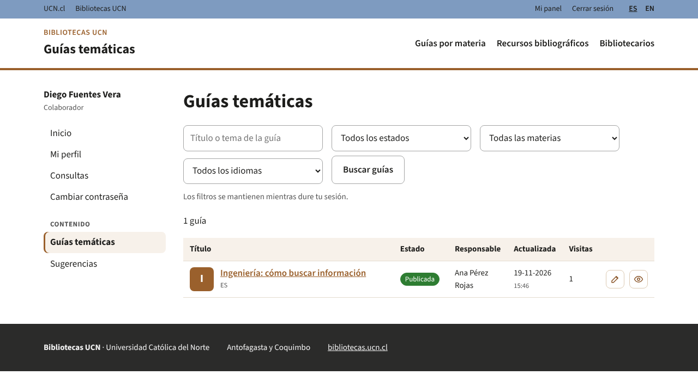
Sobre la tabla hay filtros por texto, estado, materia, idioma y, si hay varios, responsable. Los filtros se mantienen mientras dure tu sesión: si entras a editar una guía y vuelves, el listado sigue filtrado. Limpiar filtros los quita.
Haz clic en el título (o en ✏️) para abrir el editor de la guía.
3.2 Cómo está organizada una guía
Guía
├── Pestaña «Inicio»
│ ├── Sección «Bienvenida» (2 columnas)
│ │ ├── Bloque Texto
│ │ └── Bloque Perfil del bibliotecario
│ └── Sección «Busca en el catálogo»
│ └── Bloque Búsqueda en el catálogo
├── Pestaña «Bases de datos»
│ └── …
└── Pestaña «Cómo citar»
└── Subpestaña «Normas APA»- Pestaña: una página de la guía. Puede ser subpestaña de otra (un solo nivel) o un enlace externo.
- Sección: un grupo de bloques con título, que reparte sus bloques en 1, 2 o 3 columnas (en celulares, siempre en una).
- Bloque: una caja con contenido: texto, recursos, libros, un video, etc.
3.3 El editor de la guía#
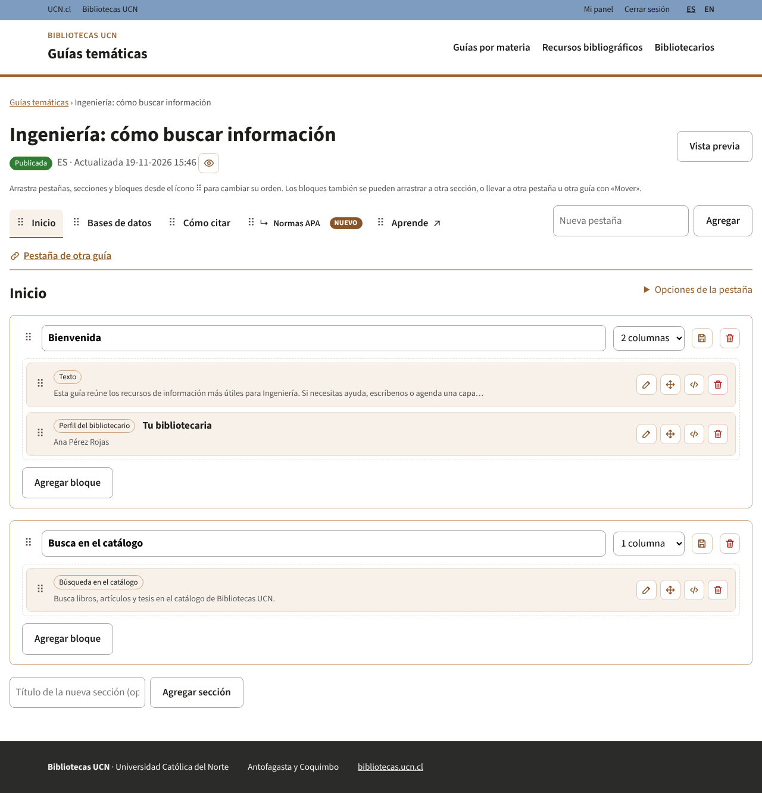
De arriba hacia abajo:
- Cabecera: título, estado y fecha de actualización, y los botones Vista previa, Ver publicada y (solo para el responsable) Datos de la guía y Publicar / Pasar a borrador.
- Barra de pestañas: un clic abre la pestaña. Al final, el campo Nueva pestaña con el botón Agregar, y el enlace Pestaña de otra guía.
- Contenido de la pestaña: sus secciones, cada una con sus bloques y el botón Agregar bloque. Al final, el campo para Agregar sección.
Ordenar arrastrando#
Pestañas, secciones y bloques se reordenan arrastrando el icono ⠿ que tienen a la izquierda. Un bloque puede arrastrarse a otra sección de la misma pestaña. El orden se guarda solo al soltar.
Pestañas#
- Agregar: escribe el nombre en Nueva pestaña y presiona Agregar. Se crea con una sección vacía.
- Opciones de la pestaña (enlace a la derecha del título de la pestaña abierta):
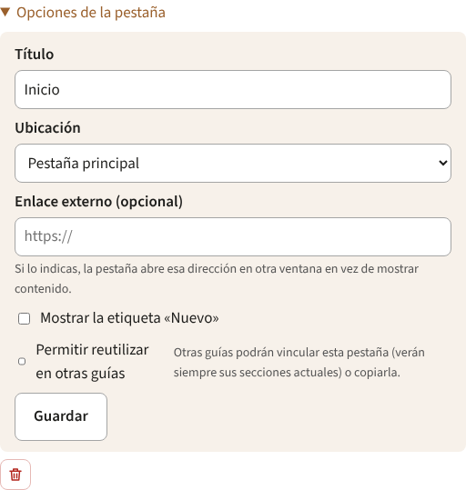
| Opción | Efecto |
|---|---|
| Título | Nombre que se ve en la barra de pestañas |
| Ubicación | «Pestaña principal» o «Subpestaña de…» otra pestaña (se despliega bajo ella) |
| Enlace externo | Si lo indicas, la pestaña abre esa dirección en otra ventana en vez de mostrar contenido |
| Mostrar la etiqueta «Nuevo» | Destaca la pestaña con una etiqueta |
| Permitir reutilizar en otras guías | Otras guías podrán vincular o copiar esta pestaña (ver 3.6) |
- Eliminar: el botón 🗑️ bajo las opciones borra la pestaña con todo su contenido, después de confirmar.
Secciones#
Cada sección tiene un campo de título, un selector de columnas (1, 2 o 3) y los botones 💾 (guardar título y columnas) y 🗑️ (eliminar la sección y sus bloques). Para crear una, escribe el título en Agregar sección al final de la pestaña.
Bloques#
Cada bloque muestra un resumen y estos botones:
| Botón | Qué hace |
|---|---|
| ✏️ Editar | Abre el formulario del bloque |
| ✥ Mover | Lo lleva a otra sección, de esta u otra pestaña, o a otra guía que puedas editar |
| </> Incrustar | Entrega el código para mostrar el bloque en otra web (Moodle, sitio de una carrera) |
| 🗑️ Eliminar | Lo borra, después de confirmar |
Agregar bloque despliega los tipos disponibles:
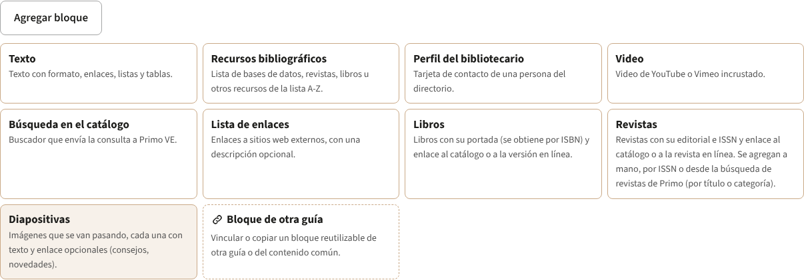
3.4 Tipos de bloque#
Todos los bloques tienen un Título opcional (se muestra en la barra de la caja) y la casilla Permitir reutilizar en otras guías.
Texto#
Editor con formato: negrita, cursiva, listas, enlaces, tablas, títulos. El texto pegado desde Word se limpia de estilos extraños al guardar.
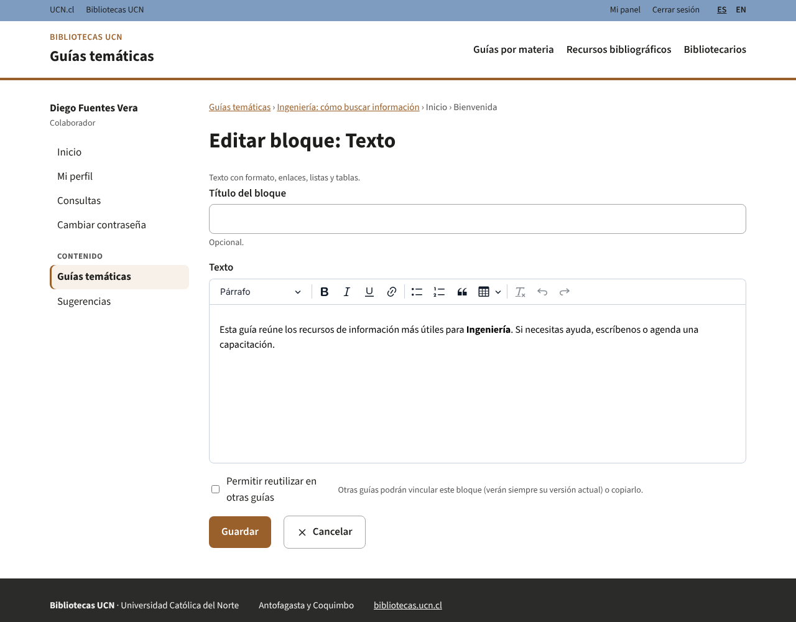
Ejemplo. En la pestaña «Cómo citar», un bloque Texto titulado «Normas de citación» explica en una lista breve que IEEE usa referencias numeradas y APA autor y año.
Recursos bibliográficos#
Muestra recursos elegidos de la lista A-Z (bases de datos, revistas, libros, normas, herramientas…). Su enlace pasa por el proxy cuando corresponde, y los de acceso abierto llevan la marca «Recurso libre».
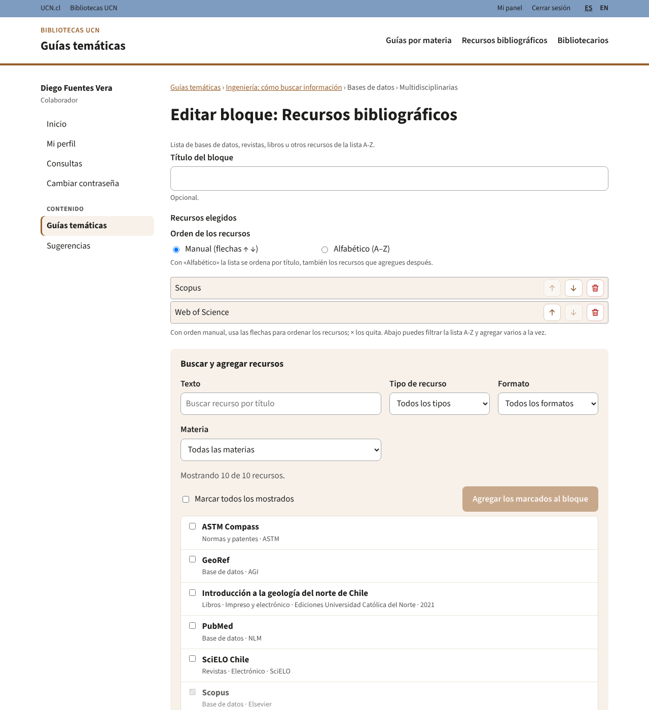
- Orden de los recursos: Manual (con las flechas ↑ ↓ de cada recurso) o Alfabético (A–Z).
- Recursos elegidos: los que ya están en el bloque; ✕ los quita (no los borra de la lista A-Z).
- Buscar y agregar recursos: filtra la lista A-Z por texto, tipo, formato y materia, marca los que quieras (o Marcar todos los mostrados) y presiona Agregar los marcados al bloque.
Si el recurso no está en la lista A-Z, pide a un editor que lo agregue, o sugiérelo desde el sitio público.
En la guía publicada, un bloque con más de 20 recursos de dos o más tipos ofrece botones para filtrar por tipo.
Libros#
Lista de libros con portada, autor, editorial y año, enlazados a su registro en el catálogo o a su versión electrónica.
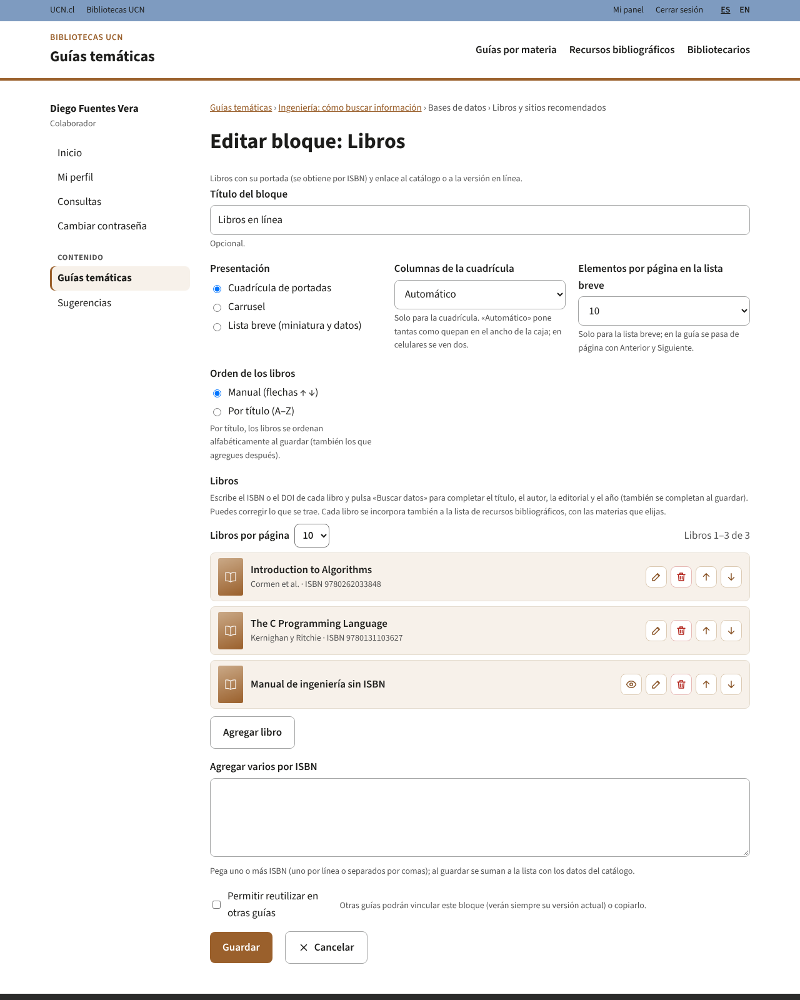
- Presentación: cuadrícula de portadas (eliges las columnas), carrusel o lista breve paginada.
- Orden: manual o por título A–Z.
- Agregar libro: escribe el ISBN (o el DOI) y presiona Buscar datos: se completan título, autores, editorial, año y portada desde el catálogo Primo o desde doi.org. Lo que escribas a mano tiene prioridad.
- Agregar varios por ISBN: pega varios ISBN, uno por línea o separados por comas; al guardar se buscan sus datos.
- Buscador de libros: busca en el catálogo (título, autor, editorial) o en Biblioges (bibliografía de una carrera o asignatura). Marca los resultados y presiona Agregar los marcados.
- Formato de cada libro: impreso, electrónico o ambos; «Detectar» lo deduce del catálogo.
- Materias de cada libro, y el desplegable Asignar materias a los que agregues del buscador.
Al guardar, cada libro se incorpora solo a la lista de recursos A-Z como tipo Libros (si ya estaba, se vincula sin duplicarlo). Quitar un libro del bloque no lo borra de la lista.
Ejemplo. Para la pestaña «Libros» de Ingeniería: en el buscador eliges Biblioges, la carrera Ingeniería Civil, bibliografía básica, disponible y «solo la última edición»; marcas los resultados, eliges la materia «Ingeniería civil» en Asignar materias a los que agregues, presionas Agregar los marcados y luego Guardar.
Revistas#
Igual que Libros, para revistas: a mano, por ISSN o desde la búsqueda de revistas del catálogo Primo (por título o por categoría: área, subárea y especialidad). También acepta pegar un enlace de una búsqueda de revistas de Primo. Las revistas se incorporan a la lista A-Z como tipo Revistas.
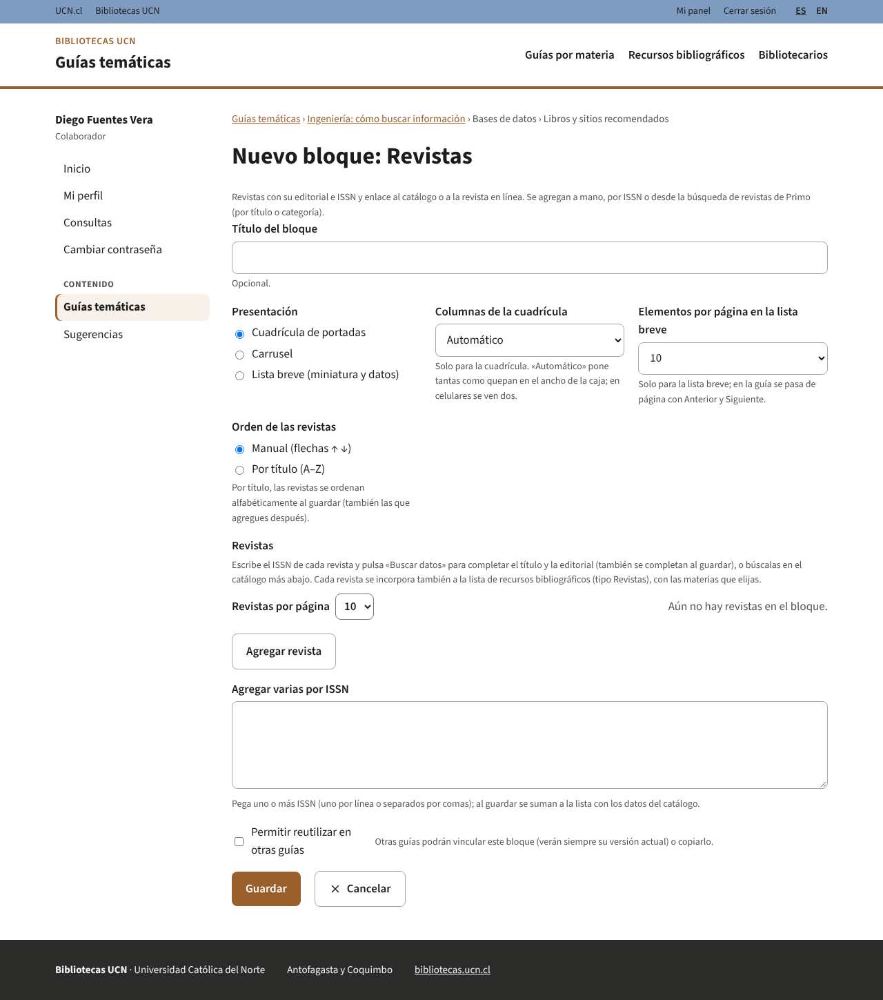
Lista de enlaces#
Sitios web externos, cada uno con texto, dirección y descripción opcional. La casilla Agregar a recursos bibliográficos (lista A-Z) crea (o vincula, si la dirección ya existe) un recurso de tipo Sitio web, de acceso abierto y con las materias de la guía.
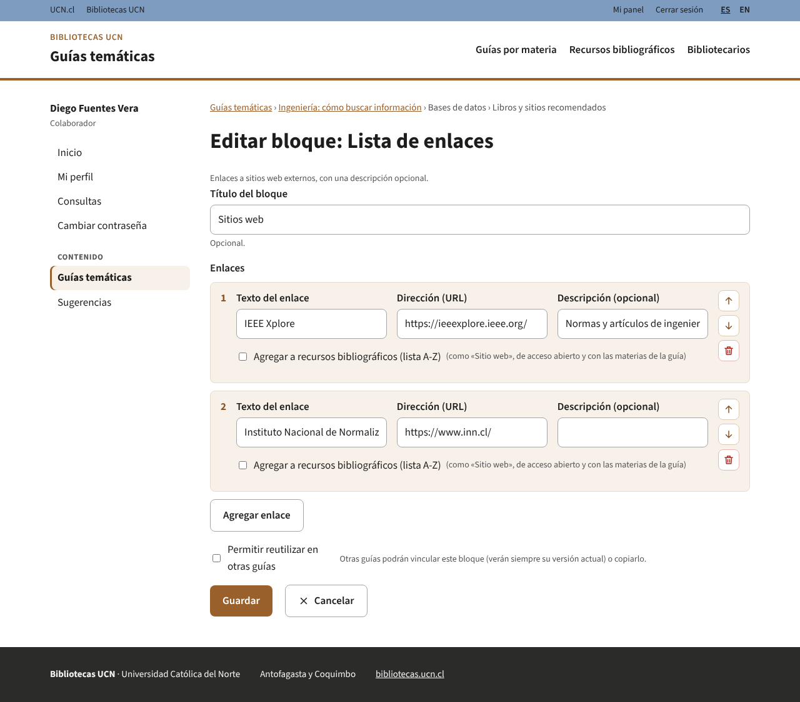
Perfil del bibliotecario#
Tarjeta de contacto de una persona del directorio: foto, cargo, correo, ubicación y botón para agendar una cita.
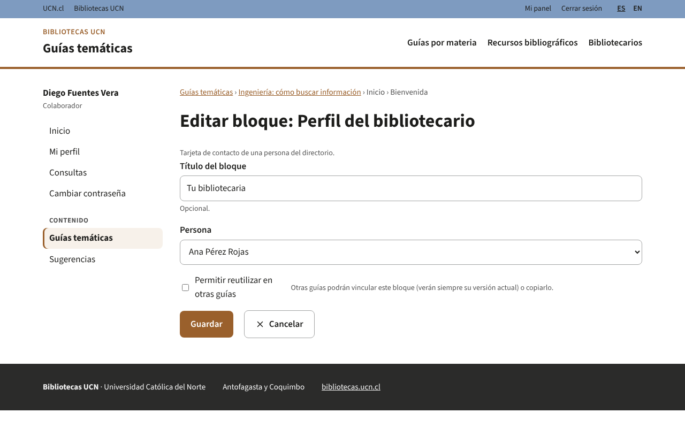
Video#
Pega el enlace de YouTube o Vimeo y, si quieres, una descripción. YouTube se muestra en modo de privacidad mejorada.
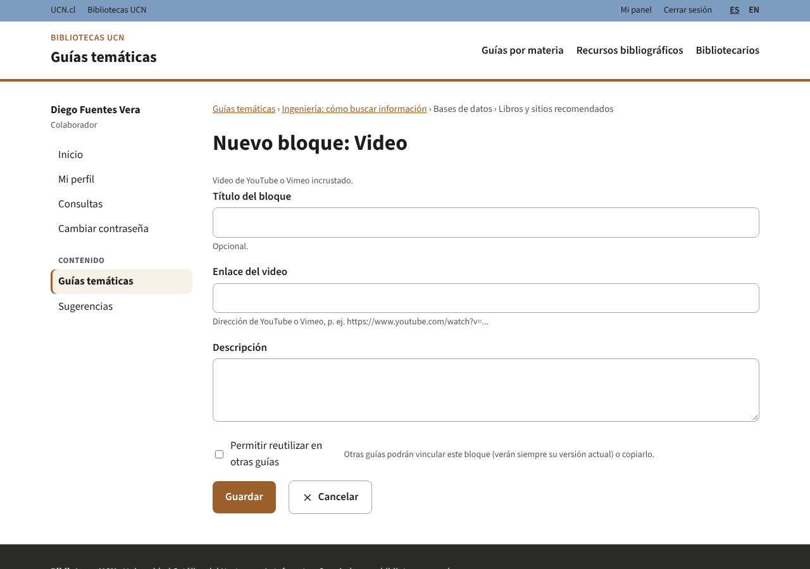
Búsqueda en el catálogo#
Caja de búsqueda que envía la consulta al catálogo Primo VE, con un texto de ayuda opcional.
Diapositivas#
Carrusel de imágenes que se van pasando. Cada imagen puede llevar un texto y un enlace. Sube imágenes JPG, PNG o WebP con Agregar diapositiva.
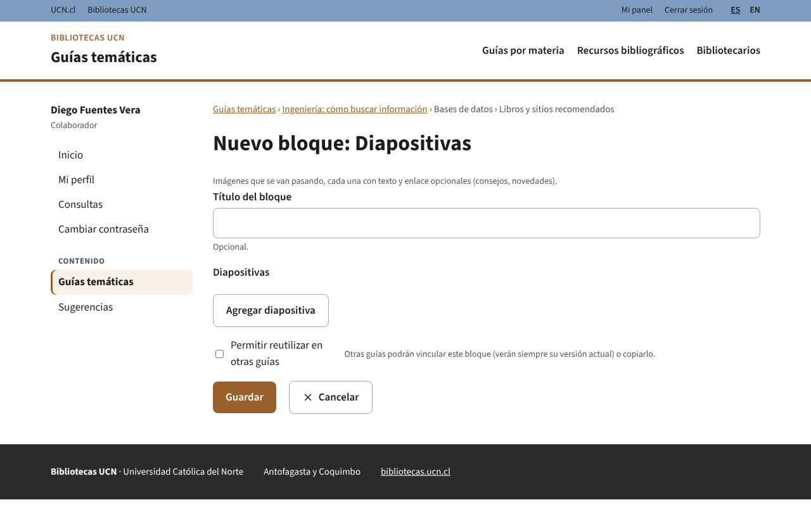
3.5 Mover e incrustar un bloque
Mover permite elegir la guía, la pestaña y la sección de destino, y si el bloque va al final o al principio.
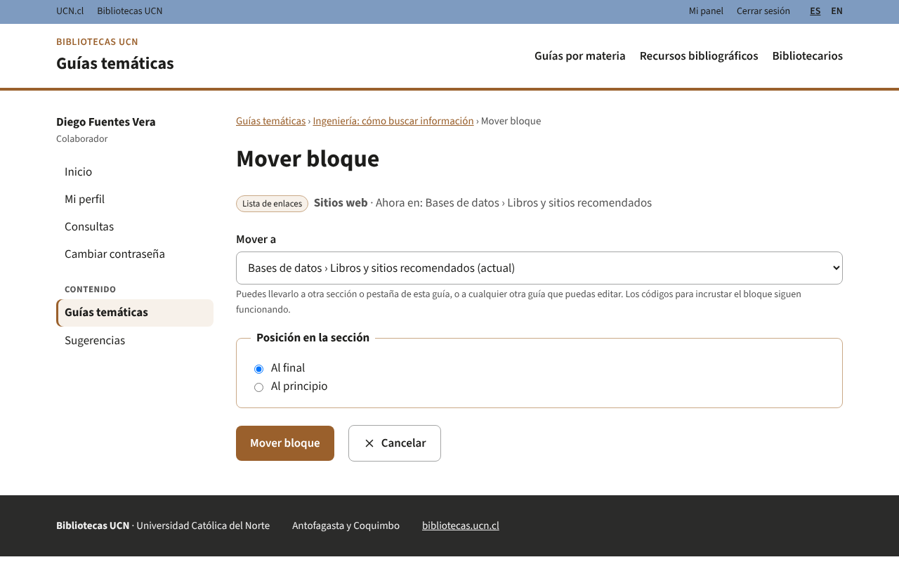
Incrustar entrega dos códigos para mostrar el bloque
en otra página web (solo funciona con guías publicadas y públicas): el
recomendado, que ajusta el alto solo, y un <iframe>
para sitios que no aceptan scripts. Debajo se ve cómo quedará.
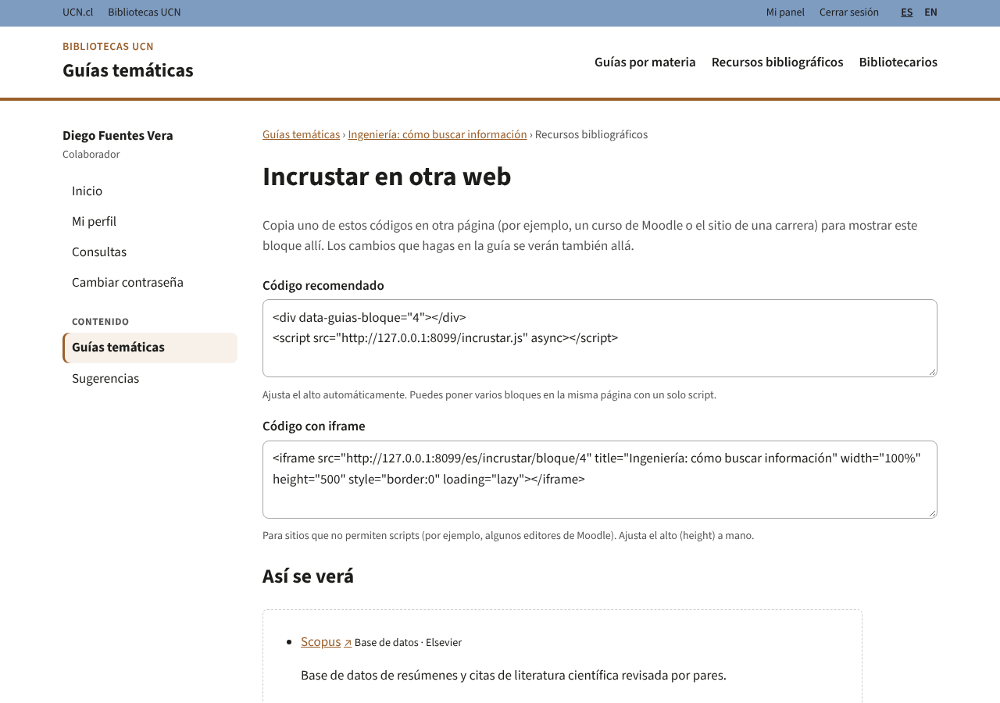
Ejemplo. Un docente quiere mostrar en su curso de Moodle el bloque «Multidisciplinarias». En Incrustar copias el «Código con iframe» y se lo envías; él lo pega en una etiqueta de texto de Moodle en modo HTML.
3.6 Reutilizar contenido de otras guías
Para no repetir lo mismo en varias guías (bases multidisciplinarias, normas de citación, horarios), un bloque o una pestaña marcados como Permitir reutilizar en otras guías se pueden agregar a otra guía:
- En una sección, Agregar bloque → Bloque de otra guía.
- En la barra de pestañas, Pestaña de otra guía.
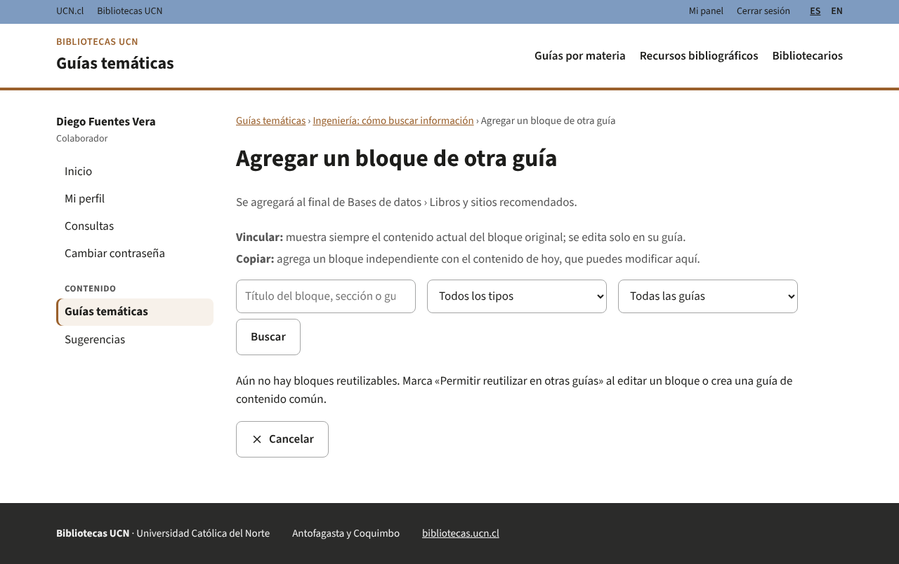
Hay dos formas de agregarlo:
| Forma | Resultado |
|---|---|
| Vincular | Muestra siempre el contenido actual del original. Solo se edita en la guía original; en esta aparece como vínculo |
| Copiar | Crea una copia independiente que puedes cambiar sin afectar al original |
Un vínculo puede pasar a ser copia con Convertir en copia propia. Si alguien elimina un original que tiene vínculos, la plataforma avisa qué guías lo usan, y esos vínculos se borran con él.
El administrador puede mantener una guía de contenido común, que no se publica y cuyos bloques y pestañas están siempre disponibles para reutilizar (ver 5.9).
3.7 Vista previa#
Vista previa muestra la guía tal como se verá publicada, incluso si está en borrador. Una franja arriba indica el estado y lleva de vuelta al editor.
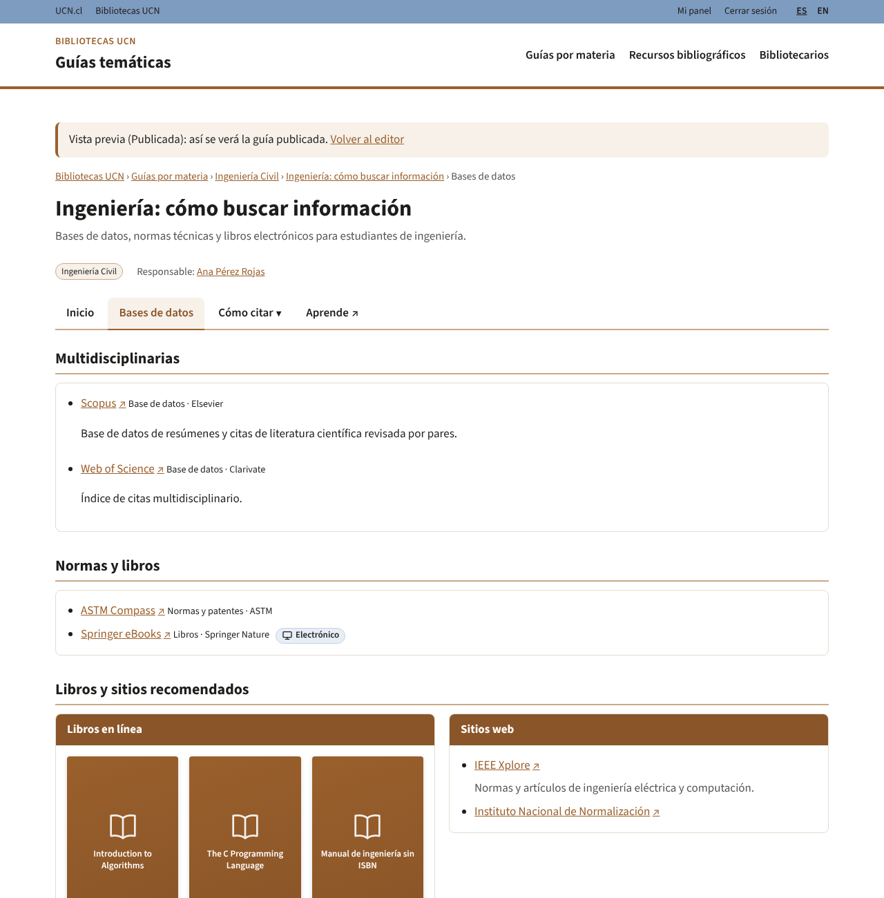
3.8 Ejemplo completo: agregar una pestaña «Tesis»
- En el editor de la guía, escribe «Tesis» en Nueva pestaña y presiona Agregar.
- En la sección que se creó, escribe el título «Dónde buscar tesis», elige 2 columnas y presiona 💾.
- Agregar bloque → Texto: título «Repositorio UCN», un párrafo explicando qué tesis hay y un enlace. Guardar.
- Agregar bloque → Lista de enlaces: título «Otros repositorios», agrega «LA Referencia» y «Repositorio Institucional de la U. de Chile» con su dirección. Guardar.
- Arrastra la pestaña «Tesis» con su icono ⠿ para dejarla antes de «Cómo citar».
- Revisa con Vista previa. Si la guía ya está publicada, los cambios se ven de inmediato en el sitio.